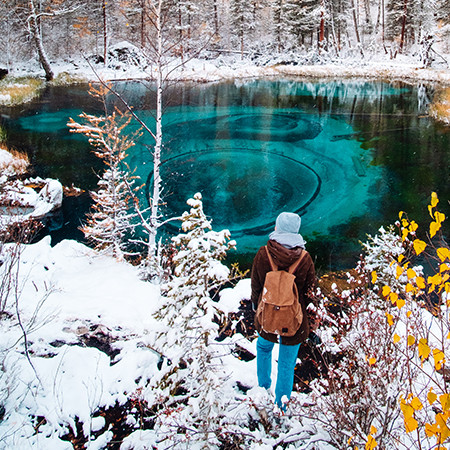
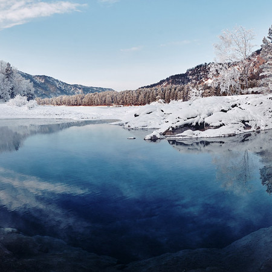

Туры по Горному Алтаю |
Гейзеровое озеро | Четырехчасовая экскурсия по Голубым озерам Катуни – это отличный шанс своими глазами полюбоваться на водобитные озера, которые сформировалис... |
Озеро мертвых духов | Туристы на Алтае получат уникальную возможность очутиться на озере, куда каждый год слетаются зимовать красивейшие лебеди-кликуны. В России ... |
Мы готовы Вас удивить: